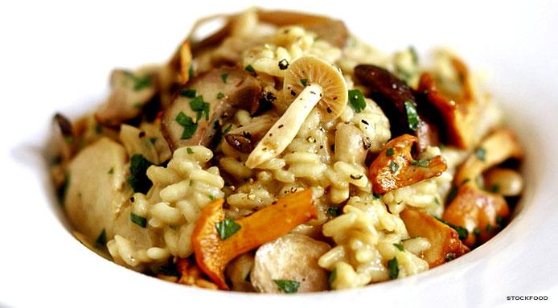

Risotto

Description
Ingredients
- 1 Cup mushroom mix (shitakes, creminis, morel)
- 1 Cup Arborio rice
- 1 litre Vegetable Stock
- 1 lemon
- olive oil
- few tabs of butter
- freshly grated parmesean cheese
- chives or green onion
- 2 small to medium shallots
- 1 bottle of dry white wine
Steps
- Warm stock with lid until boiling and then turn off heat.
- Thinly slice mushrooms and then cook on medium heat with oil for 3 minutes until tender. Remove from heat with liquid.
- Dice up shallots and fry with a small amount of butter until softened.
- Add the rice to the shallots with some oil. Move around to coat rice and cook for a few minutes until it takes on a golden colour.
- Add 1/4 Cup wine to deglaze and stir rice to incorporate. Pour the rest of the wine into a glass and enjoy while you cook.
- Slice up lemon and squeeze juice, enduring that no seeds fall into rice.
- Begin by adding half a ladle of the stock and continuously stir the rice until all the liquid is incorporated.
- Repeat the process of adding the stock, slowly building up to a full ladle. Be sure that all the liquid is incorporated into the rice before adding more.
- After all the stock is abosrded, the rice should be soft and creamy. Add at least a tablespoon of butter (or more if preferred), salt and pepper.
- After seasoning properly, add mushroom with its liquid and stir into stock and remove from heat. Grate parmesean and stir into risotto.
- Serve in bowls and then chop up some chives and add right before serving.